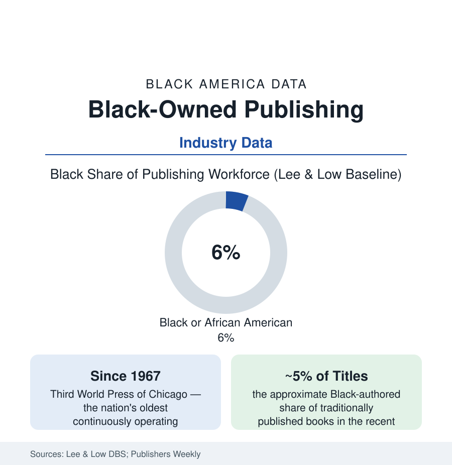

Black Business
Black-Owned Publishing: Third World Press and the Houses That Kept the Books
Black-owned publishers — led by the oldest, Third World Press (1967) — built the literary infrastructure the majors wouldn't. The industry data, then and now.

Every literature needs houses, and Black literature's were substantially built by Black publishers: the presses that printed what the major houses declined — the poetry, the movement scholarship, the children's books of the librarians article — and kept the backlist of a culture in print across the decades when no one else would. The flagship fact is a founding date: 1967, Third World Press of Chicago, still independent, the oldest continuously operating Black-owned book publisher in America. Around it, the industry's modern data (the Lee & Low baseline surveys: publishing's workforce about six percent Black, its executive tier thinner) describe the world the independents publish into. This article reads the book business's file.
The Houses: A Lineage in Imprints
The lineage is nameable because the count is small and the consequence large: Third World Press (Haki Madhubuti's Chicago house — publisher of Gwendolyn Brooks, whose move from a major house to the Black independents in 1969 was the era's defining literary-business event, and of the Black Arts canon entire); Black Classic Press (Baltimore, 1978 — the scholarly reprint house that kept the out-of-print Black canon findable, its printing operation in-house); Broadside Press before them (Detroit, 1965, Dudley Randall's poetry house); Africa World Press and Red Sea Press (the scholarly and diaspora list); Just Us Books (1988 — the children's house of the Wade and Cheryl Hudson, builders of the Black children's-book shelf the CCBC counts); and the modern wave (the literary independents and hybrid presses of the 2010s-20s, the romance and genre houses the market data show thriving in the digital channels, the university-press partnerships). The economics across all of it are the small-press constants — thin margins, distribution through the same two or three gatekeepers (the wholesalers and the platform), the backlist as the only pension — endured at racial scale: the advances and marketing budgets of the majors' Black-authored titles (the #PublishingPaidMe disclosures of 2020 gave the advance gap its first public dataset, the disparities legible in the authors' own posted numbers) being the competitive weather the independents fly in.
The Majors' Data: Workforce, Titles, and the Imprint Era
The mainstream industry's numbers in the Lee & Low waves (2015, 2019, 2023): overall workforce roughly three-quarters white, Black staff around five to six percent, editorial departments similar, executive and board tiers the thinnest — against an authorship share that the title-output analyses put near five percent Black-authored in recent years (climbing from the baseline era's lower base on the strength of the post-2020 acquisition wave, whose durability the subsequent years' lists are now grading). The structural response of the current era is the imprint system: the Black-led imprints inside the major houses (several launched or elevated in the 2020s, their editors acquiring the lists the independents proved marketable) — the industry's recurring pattern of absorbing the independents' demonstration as a department. The agent tier (the literary agencies' Black agents countable in the dozens in the trade directories — the submission gate's own demographics) and the review-and-prize economy (the National Book Awards' and Pulitzer rosters' Black share across the decades, the review pages' column inches in the content analyses) complete the circuit from manuscript to canon.
The Self-Publishing Economy: The Door That Opened Sideways
The largest structural change in the file is technological: the self-publishing and print-on-demand economy (whose title counts dwarf the traditional industry's) carries a Black author population the platform data do not publish by race and the market's visibility describes anyway — the romance, urban-fiction, Christian, and children's segments where Black indie authors built six-figure readerships outside the gate system entirely (the urban-fiction wave of the 2000s — street literature's mass-market paperbacks moving from indie hand-sales to major-house bidding wars within the decade — as the template case), the audiobook economy's Black narrator-and-author tier, and the direct-to-reader subscription channels of the current decade. The trade-off the data frame: the gate's filter removed, and with it the gate's services (the editing, the design, the marketing department, the review pages' attention) — the indie author's P&L absorbing each as a purchased service or an unpaid hour, the income distribution of the indie tier accordingly steep in the survey data.
Reading the Publishing Data
Six percent of the workforce, five percent of the titles, and a fifty-seven-year-old independent house in Chicago still standing: publishing's file is the culture industry's balance sheet, and its most important line is the backlist — the books kept in print by the houses that believed in them when belief was the whole budget. Brooks chose the small house over the large one with her eyes open. The data of what that house still publishes, six decades on, remain the industry's most eloquent audit.
More in Black Business
Black-Owned Businesses: Counts, Receipts, and the Representation Gap
About 161,000 Black-owned employer firms and three million solo ventures: how the Census Bureau counts Black business ownership, where firms concentrate, and the gap between population share and business share.
Black Median Net Worth: The Wealth Gap in Federal Reserve Data
The Federal Reserve puts Black median family net worth at $44,900, against $285,000 for White families — about 16 cents on the dollar. The widest gap in economic data.
Black Buying Power: The $1.8 Trillion Consumer Economy
Black buying power is estimated at about $1.8 trillion — larger than the economy of most nations. What the figure measures, who produces it, and what it buys.
Source: Publishers Weekly and Lee & Low Diversity Baseline Survey; U.S. Census Bureau Annual Business Survey; Association of American Publishers; company and literary-history records.